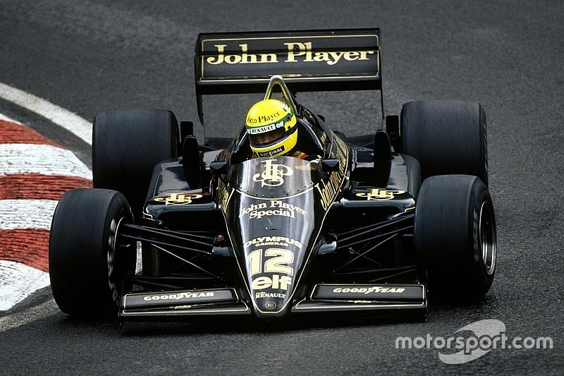

| Inicio | Ayrton |

Lotus 98T fue una máquina impresionante de la era turbo de la Fórmula 1. Aquí tienes más detalles sobre su diseño y rendimiento:
Motor: Renault Gordini EF15B, V6 turbo de 1.5 litros.
Potencia: Aproximadamente 800-900 HP en configuración de carrera y más de 1,000 HP en clasificación.
Transmisión: Caja de cambios Lotus/Hewland de 6 velocidades manual.
Chasis: Monocasco de fibra de carbono y kevlar, con estructura de panal de aluminio.
Suspensión: Doble brazo oscilante con resortes helicoidales y amortiguadores accionados por varillas de tracción.
Peso: 540 kg, extremadamente ligero para su potencia.
Turbo extremo: El motor Renault EF15B podía alcanzar presiones de sobrealimentación superiores a 5.5 bar, lo que lo convertía en uno de los motores más potentes de la historia de la F1.
Sistema de válvulas neumáticas: Renault introdujo una versión especial del motor con muelles de válvula neumáticos, mejorando la eficiencia y la respuesta del motor.
Consumo de combustible: Equipado con un microordenador de consumo de combustible, algo avanzado para la época.
Aerodinámica: Incorporaba una forma temprana de barge boards, mejorando el flujo de aire alrededor del coche.
Pilotos: Ayrton Senna y Johnny Dumfries.
Victorias: 2 (Senna en España y Detroit).
Poles: 8, demostrando su velocidad en clasificación.
Podios: 8, mostrando su competitividad a pesar de la fiabilidad limitada.
Este coche fue el último Lotus con motor Renault antes de que el equipo cambiara a Honda en 1987. Su combinación de potencia extrema y la habilidad de Senna al volante lo han convertido en una leyenda de la Fórmula 1.